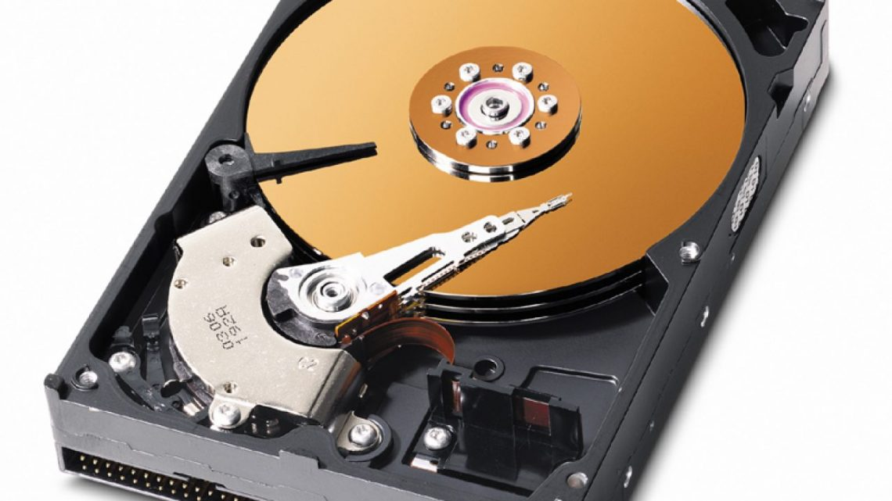
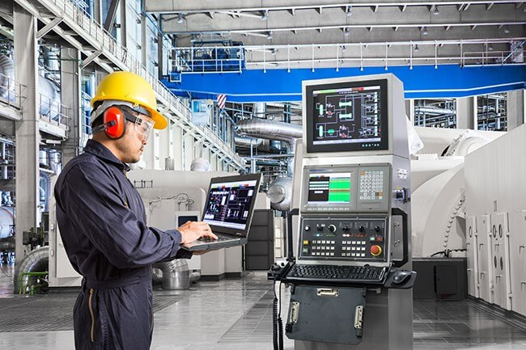

Unidad 3: Selección de Componentes para el Montaje de una PC
3.1 Chipset
Un chipset es el conjunto de circuitos integrados diseñados con base en la arquitectura de un procesador, permitiendo que ese tipo de procesadores funcionen en una placa base. Sirven de puente de comunicación con el resto de componentes de la placa, como son la memoria, las tarjetas de expansión, los puertos USB, ratón, teclado, etc.
Las placas base modernas suelen incluir dos integrados principales:
- Puente Norte: Gestiona comunicación con CPU, RAM y tarjeta gráfica
- Puente Sur: Maneja dispositivos de E/S y almacenamiento
Nota: Las últimas placas base carecen de puente norte, ya que los procesadores de última generación lo llevan integrado.
Funcionamiento
El chipset es el que hace posible que la placa base funcione como eje del sistema, dando soporte a varios componentes e interconectándolos de forma que se comuniquen entre ellos haciendo uso de diversos buses.
Es uno de los pocos elementos que tiene conexión directa con el procesador, gestiona la mayor parte de la información que entra y sale por el bus principal del procesador, del sistema de vídeo y muchas veces de la memoria RAM.

3.1.1 Unidad de Procesamiento
La unidad central de procesamiento (CPU - Central Processing Unit) es el hardware dentro de una computadora u otros dispositivos programables. Su trabajo es interpretar las instrucciones de un programa informático mediante la realización de las operaciones básicas aritméticas, lógicas y externas.
Componentes de la CPU:
Unidad Aritmético Lógica (ALU)
Realiza operaciones aritméticas y lógicas.
Unidad de Control (CU)
Dirige el tráfico de información entre los registros de la CPU y conecta con la ALU las instrucciones extraídas de la memoria.
Registros Internos
No accesibles (de instrucción, de bus de datos y bus de dirección) y accesibles de uso específico (contador programa, puntero pila, acumulador, flags, etc.) o de uso general.

3.1.2 Controlador del Bus
El controlador del bus se encarga de la frecuencia de funcionamiento y las señales de sincronismo, temporización y control. Está ubicado en un chip en la placa base.
El bus es la vía a través de la que se van a transmitir y recibir todas las comunicaciones, tanto internas como externas, del sistema informático. El bus es solamente un dispositivo de transferencia de información entre los componentes conectados a él, no almacena información alguna en ningún momento.
Los datos, en forma de señal eléctrica, sólo permanecen en el bus el tiempo que necesitan en recorrer la distancia entre los dos componentes implicados en la transferencia.

3.1.3 Puerta de Entrada/Salida
Un puerto de E/S es un enchufe en una computadora al que se conecta un cable. El puerto conecta la CPU a un dispositivo periférico a través de una interfaz de hardware o a la red a través de una interfaz de red.
Tipos de puertos:
Puerto Interno
Conecta la placa base a dispositivos internos como unidad de disco duro, unidad de CD, módem interno, etc.
Puerto Externo
Conecta la placa base a dispositivos externos como módem, mouse, impresora, unidades flash, etc.
Principales tipos de puertos:
- Puerto Serial: Transmite datos secuencialmente bit a bit (RS232, COM)
- Puerto USB: Universal Serial Bus, estándar para conexión de datos digitales
- Puerto PS/2: Para conectar mouse y teclado (casi obsoleto)
- Puerto de Infrarrojos: Intercambio inalámbrico de datos hasta 10m
- Puerto Bluetooth: Conexión inalámbrica de corto alcance
- Puerto FireWire: IEEE 1394, para dispositivos de audio y video
3.1.4 Controlador de Interrupciones
El controlador de interrupciones es un módulo que tiene por función gestionar las interrupciones de entrada/salida para el procesador. Esto ahorra diseñar lógica y añadir patitas al procesador. También proporciona flexibilidad porque permite, idealmente, gestionar un número ilimitado de señales de interrupción.
Ciclo de reconocimiento de interrupción:
- Tras la activación de una línea IR, el controlador activa la salida INTR señalándole a la CPU la existencia de una interrupción activada
- Al recibir la señal, el procesador da un pulso en su salida INTA indicando que comienza un ciclo de reconocimiento
- El controlador comienza a arbitrar las interrupciones recibidas y selecciona la más prioritaria
- Se emite un segundo pulso por la línea INTA que utiliza el controlador para depositar en el bus el vector correspondiente
- El procesador obtiene la dirección de la rutina de interrupción y salta a ella
3.1.5 Controlador de Acceso Directo a Memoria
El mecanismo de acceso directo a memoria está controlado por un chip especial, el DMAC ("DMA Controller"), que permite realizar estos intercambios sin apenas intervención del procesador.
- XT: Integrado 8237A que proporcionaba 4 canales de 8 bits
- AT: Dos controladores, el segundo en "Cascada" de la línea 4 del primero
- Canales de 16 bits: Pueden mover 2 Bytes de posiciones contiguas cada vez
Características:
Cada canal tiene asignada una prioridad para el caso de recibirse simultáneamente varias peticiones (los números más bajos tienen prioridad más alta). Pueden ser utilizados por cualquier dispositivo que los necesite (suponiendo que esté diseñado para soportar este modo de operación).
3.1.6 Circuitos de Temporización
El circuito electrónico que más se utiliza tanto en la industria como en circuitería comercial es el circuito temporizador o de retardo. Un temporizador básicamente consiste en un elemento que se activa o desactiva después de un tiempo preestablecido.
De esta manera podemos determinar el parámetro relacionado con el tiempo que ha de transcurrir para que el circuito susceptible de temporizarse, se detenga o empiece a funcionar o simplemente cierre un contacto o lo abra.
Aplicaciones en PC:
Se encuentra en la placa base de la PC y es capaz de mantener una cuenta de tiempo basada en el reloj de la computadora. Puede usarse para calcular el intervalo entre dos mediciones de tiempo o para generar pausas. Es útil para medir el tiempo que dura cierto proceso o para mantener actualizadas la hora del día y la fecha si se deja la PC conectada y encendida.

3.1.7 Circuitos de Control
Es una red secuencial que acepta un código que define la operación que se va a ejecutar y luego prosigue a través de una secuencia de estados, generando una correspondiente secuencia de señales control.
Señales generadas:
- Señales de control de lectura-escritura en el bus de control del sistema
- Señales de dirección de memoria válida
- Señales conectadas a la ALU
- Señales a los registros internos del procesador
Regular el flujo de información en el procesador y desde los buses de dirección y de datos del sistema.
3.1.8 Controladores de Video
La tarjeta de video (también llamada controlador de video) es un componente electrónico requerido para generar una señal de video que se manda a una pantalla de video por medio de un cable.
Componentes de una tarjeta gráfica:
Controlador de Video
Lee a intervalos la información almacenada en la RAM video y la transfiere al monitor en forma de señal de video.
Memoria de Pantalla o RAM Video
Almacena la información que se mostrará en pantalla.
Generador de Caracteres
Genera los caracteres y símbolos a mostrar.
Acelerador de Gráficos
Procesa operaciones gráficas complejas de forma eficiente.
3.2 Aplicaciones
En informática, un periférico de entrada/salida o E/S (input/output o I/O) es aquel tipo de dispositivo periférico de un computador capaz de interactuar con los elementos externos a ese sistema de forma bidireccional.
Funciones:
Un periférico de E/S es el que se utiliza para ingresar datos a la computadora, y luego de ser procesados por la CPU, genera la salida de información. Su función es leer o grabar, permanente o virtualmente, todo aquello que se haga con la computadora.
- Dispositivos de comunicación entre computadoras (módems, tarjetas de red)
- Dispositivos de almacenamiento (discos duros, SSD, memorias flash)
- Periféricos de entrada y salida combinados
3.2.1 Entrada/Salida
El almacenamiento de datos tiene un proceso a través del uso de la tecnología. Ésta se aplica para organizar, distribuir y archivar información con los bytes y los bits que son parte de los sistemas de los que la gente depende día con día.
Memoria vs Almacenamiento
Memoria (RAM): Ubicación de datos a corto plazo, volátil
Almacenamiento: Componente que permite almacenar y acceder a datos a largo plazo
Dispositivos de almacenamiento:
- Unidades de discos duros (HDD): Almacenamiento magnético tradicional
- Discos de estado sólido (SSD): Almacenamiento sin partes móviles, más rápido
- Unidades híbridas: Combinación de HDD y SSD
- Almacenamiento en la nube: Datos almacenados en servidores remotos
3.2.2 Almacenamiento
Conforme la tecnología avanza, más datos se van generando, por lo que es necesario contar con un almacenamiento eficiente para poder guardar toda esa información y acceder a ella.
El almacenamiento de datos llega a ser tan importante en todos los servicios: desde una simple aplicación, contenido multimedia, direcciones, contactos, hasta protocolos de red y todo lo que tiene que ver con el mundo digital.
Evolución del almacenamiento:
El almacenamiento de datos ha cambiado mucho, desde los sistemas de disco tradicionales, que muy probablemente se sigan utilizando, pero de una forma más digital: hoy se encuentran conectados a una red y son definidos por un software.
3.2.3 Fuentes de Alimentación
Una fuente de alimentación es un componente esencial de cualquier dispositivo electrónico ya que es ella quien se encarga de darle vida. En cualquier equipo, por pequeño que sea, siempre hay una fuente de alimentación.
Función de la fuente de alimentación:
Siguiendo con el tema de los ordenadores de sobremesa, la fuente de alimentación da energía a la placa base, CPU, tarjetas gráficas, HDDs, SSDs, ventiladores, lectores de CDs. En resumen, alimenta a todo lo que necesite energía, para ello hace uso de diferentes tipos de cables.
Tipos de conectores:
- Conectores SATA: Para SSDs y HDDs
- Conector ATX 24 pines: Para la placa base
- Conectores PCIe: Para tarjetas gráficas
- Conectores Molex: Para ventiladores y dispositivos antiguos
- Conector CPU 4/8 pines: Alimentación del procesador
Las fuentes de alimentación modernas incluyen múltiples sistemas de protección: sobrevoltaje, cortocircuito, sobrecarga y sobretemperatura, protegiendo así todos los componentes del sistema.
Existen fuentes de alimentación que no requieren de ventilación, por lo que su refrigeración es completamente pasiva. Estos modelos suelen ser fuentes de medio-bajo voltaje con una alta eficiencia.
3.3 Ambientes de Servicio
El negocio de proveer servicios de datos es mucho más complejo que la forma en la que se dan los tradicionales servicios. Los primeros requieren de nuevos conocimientos y modelos de negocio, que con frecuencia se termina involucrando o necesitando la colaboración de terceras empresas.
Se hace necesario que los operadores tradicionales transformen su negocio para ofrecer los servicios de datos con los niveles de servicio que el mercado exige.
3.3.1 Negocios
Definitivamente, la tecnología en general ha sido la causa principal y la acción más directa para la transformación del trabajo de las organizaciones en la posguerra del siglo XX. Tanto los bienes de capital "duros" como los programas y sistemas de información y comunicación en general, han incrementado enormemente la productividad y eficiencia de las organizaciones.
Ejemplos de aplicación:
- Bases de datos en redes de todo orden y topología
- Sistemas de reservaciones en aerolíneas
- Sistemas de contabilidad y nóminas
- Archivos clínicos en centros de salud
- Sistemas de conmutación electrónica
- Aplicaciones a procesos administrativos

3.3.2 Industria
La industrialización de los servicios de tecnología de información va a redefinir el mercado en términos de cómo las organizaciones evalúan, compran y seleccionan los servicios y cómo los vendedores desarrollan y establecen precios de los servicios.
Para lograr esta estandarización, se requiere un enfoque hacia las soluciones genéricas y esto debe ser responsabilidad de los proveedores, que deben desarrollar, operar y administrar el resultado de estos genéricos de TI.
Madurez de la industria:
Aunque los servicios de TI están en proceso de madurez, la madurez de la industria se ha incrementado en aspectos evidentes, como la forma en que los servicios son implementados y administrados.
3.3.3 Comercio Electrónico
El desarrollo de las tecnologías y de las telecomunicaciones ha hecho que los intercambios de datos crezcan a niveles extraordinarios, simplificándose cada vez más y creando nuevas formas de comercio. En este marco se desarrolla el Comercio Electrónico.
Se considera "Comercio Electrónico" al conjunto de aquellas transacciones comerciales y financieras realizadas a través del procesamiento y la transmisión de información, incluyendo texto, sonido e imagen.
Ventajas del comercio electrónico:
- Disponibilidad 24/7
- Alcance global
- Menores costos operativos
- Personalización de la experiencia
- Análisis de datos en tiempo real
- Mayor conveniencia para los clientes